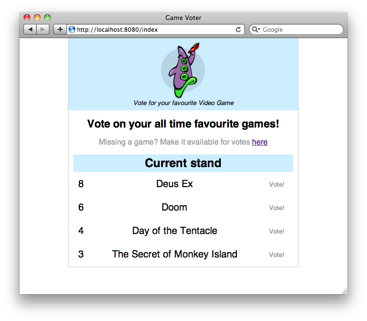
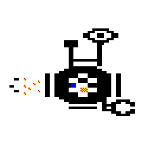

В этой статье я надеюсь дополнить статью Адама Петерсена Лисп для Web, предложив для обсуждения некоторые аспекты веб-программирования, с которыми большинство из нас знакомо.
Адам Петерсен написал потрясающую статью под названием Lisp для Web. В ней он знакомит читателей с созданием простого веб-приложения с использованием Common Lisp (далее Lisp). Это фантастическая статья, и я недавно сел с ней (и некоторыми другими ресурсами), чтобы наконец написать код на Лиспе.
Так что я хотел бы здесь взять некоторые вещи, которые были упущены (по уважительной причине) в исходной статье, и конкретизировать опыт разработки для Интернета с помощью Lisp. В конце статьи г-н Петерсен пишет, что
Благодаря динамичному и интерактивному характеру Lisp он идеально подходит для создания прототипов. А поскольку программы на Лиспе очень легко развивать, этот прототип может однажды превратиться в полноценный продукт.
Я надеюсь, что, продолжая его руководство таким образом, я смогу показать читателям, как может происходить этот процесс от прототипа до продукта; органичным образом, демонстрирующим «эволюционные» способности Лиспа.
Исходную программу можно найти в статье о Lisp для Web. Я внес в неё некоторые изменения, чтобы соответствовать определенным критериям:
В исходной статье рекомендуется использовать BerkeleyDB в качестве серверной части, доступ к которой осуществляется через библиотеку Lisp Elephant. Я все еще использую Elephant, хотя полагаю, что может быть доступно более Лисповая библиотека сериализации - Elephant требует много погружений во внешние функции. Однако BerkeleyDB заменен на SQLite. Это значительно упрощает развертывание и позволяет избежать проблем с лицензированием, которые, похоже, преследуют BerkeleyDB.
Мы привязываем хранилище Elephant к переменной, а именно
*store*, на случай, если мы хотим изменить базы
данных во время взаимодействия на верхнем уровне.
Синтаксис для запуска сервера в Hunchentoot изменился по сравнению с исходной статьей. Теперь мы создаем экземпляр acceptor(акцептора) Hunchentoot, чтобы привязать и запустить сервер.
В исходной статье используются URL-адреса,
оканчивающиеся на .htm. Например,
индексная страница находится по адресу /retro-games.htm. Нет никаких причин для того, чтобы это не было просто
/retro-games, и я изменил все URL-адреса, чтобы следовать
этому соглашению. Помните, ребята, крутые URI не раскрывают свою реализацию!
Чтобы быть немного более инклюзивным, мы больше не голосуем просто по ретро-играм. Теперь вы можете добавлять голоса за любую игру! (На самом деле это не обязательное изменение, но я не знаю многих очень старых игр, поэтому, по крайней мере, это упрощает придумывание примеров.)
Итак, первое, что мы собираемся сделать, это внести эти преобразования в исходный файл, а затем мы сможем продолжить работу оттуда.
Если вам нужна разница(отличие), чтобы вы могли начать с этих изменений, я разместил её в Gist: game-voter.patch

В оригинальной статье весьма разумно избегается обсуждение реальной среды, в которой установлен Лисп. Никому не полезно иметь устаревшее описание установки Lisp. В этом случае, однако, я хотел бы сделать снимок состояния Lisp определенными способами; Я собираюсь в некоторой степени описать свою настройку.
Запуск OS X 10.6.7 с установленным Steel Bank Common Lisp с помощью превосходной системы управления пакетами(какой то маковский менеджер) homebrew. Мой редактор, REPL и общая среда взаимодействия с Лиспом - это Emacs 23.3, скомпилированный для Mac Дэвидом Колдуэллом.
Я использую менеджер пакетов - это фантастический Quicklisp. Я уже пробовал устанавливать пакеты для Common Lisp с помощью ASDF, и Quicklisp намного проще, мощнее и многообещающе, что пугает.
В REPL следующая команда сделала все, что я ожидал, и ничего, что я не сделал: установил библиотеки (часто называемые системами), которые мне были нужны, без жалоб и поломок, и предоставил пакеты на верхнем уровне.
CL-USER> (ql:quickload '(cl-who hunchentoot parenscript elephant fiveam css-lite cl-json))
Была одна вещь, которую я заметил почти сразу, когда играл с программой.
Если бы я хотел внести изменения в «контроллер», то есть в
любую из функций, определенных с помощью
define-url-fn, перевычисление
его просто push(затолкнула) бы другой маршрут в
hunchentoot:*dispatch-table*.
Само по себе это не большая проблема, но это ненужное вычисление,
и после того, как я поместил сотню или около того различных версий
диспетчеризации контроллера в *dispatch-table*(таблицу диспетчеризации), я захотел более практичный способ описания маршрутов
на моем сайте. Кроме того, использование макроса, такого как
define-url-fn, для описания маршрутов
означает, что Emacs не распознает эту функцию контроллера как допустимый
символ. Это глупое удобство, но чем больше я использую defmacro и defun, тем легче мне
найти код, который я ищу, с помощью поиска символов Emacs.
Так, например, контроллер для добавления игры выглядит следующим образом:
(define-url-fn (game-added)
(let ((name (parameter "name")))
(unless (or (null name) (zerop (length name))) ; In case JavaScript is turned off.
(add-game name))
(redirect "/games"))) ; Display the front page.
К этому:
(defun controller-game-added ()
(let ((name (parameter "name")))
(unless (or (null name) (zerop (length name)))
(add-game name))
(redirect "/retro-games")))
Теперь, имея несколько функций, я вручную установил *dispatch-table* в список желаемых маршрутов,
используя функции создания диспетчера Hunchentoot.
hunchentoot:create-regex-dispatcher
- это функция, которая принимает регулярное выражение для конечной
точки и запускает функцию, названную вторым аргументом, при выполнении.
(setq *dispatch-table* (list (create-regex-dispatcher "^/index" 'controller-index) (create-regex-dispatcher "^/vote" 'controller-vote) (create-regex-dispatcher "^/game-added" 'controller-game-added) (create-regex-dispatcher "^/new-game" 'controller-new-game)))
Исходный учебник никогда не предоставляет CSS, который использовался для
стилизации веб-сайта. Как видите, я предоставил некоторые из моих
собственных CSS, чтобы немного улучшить ситуацию, но вы не увидите этого,
если зашли так далеко в статье. Почему? Потому что мы перезаписали
содержимое *dispatch-table* четырьмя
маршрутами, которые мы определили выше. Что мы собираемся сделать,
так это определить другой маршрут для CSS, но предоставить CSS в форме Lisp,
которая затем будет переведена для нас в CSS. Это дает нам некоторую
гибкость и может помочь уменьшить часть избыточности, которую CSS имеет
тенденцию накапливать, не прибегая к некоторым расширениям CSS (таким
как Sass или LESS).
CSS входит в функцию контроллера, как и другие динамически создаваемые страницы на сайте.
(defun controller-css () (setf (hunchentoot:content-type* hunchentoot:*reply*) "text/css") "...")
Мы устанавливаем content-type
заголовка на «text/css», что позволяет веб-браузерам знать,
что отправляемый нами файл предназначен для интерпретации как
таблица стилей. Я собрал стиль и буду использовать некоторые
его аспекты, чтобы проиллюстрировать некоторые моменты с помощью
Lisp, но вы можете изменить стиль сайта, как хотите. В любом случае
замените многоточие в приведенном выше примере кода своим стилем. Вы
можете использовать свой CSS дословно, явно используя несколько символов
новой строки в одной строке. Строки Лиспа понимают несколько строк без
какого-либо специального индикатора:
(setq *some-string* "This is a string that spans multiple lines.")
Мой стиль CSS воспроизводится по следующей ссылке: game-voter.css
Мы будем использовать библиотеку css-lite для создания нашего CSS. Эта библиотека предоставляет
один основной метод, css, который принимает
список списков и генерирует из них наш CSS. Внутри этого параметра списка
все остальные списки описывают набор селекторов, а следующий список
представляет собой связанный список атрибутов css для значений. Мой первый
перевод в формат css-lite выглядит примерно так:
(defun controller-css ()
(setf (hunchentoot:content-type* hunchentoot:*reply*) "text/css")
(css-lite:css
(("body")
(:width "70%" :margin "0 auto" :font-family "sans-serif"
:border-left "1px solid #ccc"
:border-right "1px solid #ccc"
:border-bottom "1px solid #ccc"))
(("h1")
(:font-size "140%" :text-align "center"))
(("h2")
(:color "#000" :background-color "#cef" :margin "0 auto" :padding "4px 0"))
(("#header")
(:background-color "#cef" :padding "8px"))
(("#header .logo")
(:display "block" :margin "0 auto"))
(("#header .strapline")
(:display "block" :text-align "center" :font-size "80%" :font-style "italic"))
;; и так далее ...
Итак, первое, что бросается в глаза, - это повторение описания border(границы)
для селектора body(тела). Я уверен, что есть
какой-нибудь способ описания границы с помощью CSS, но в качестве примера
мы собираемся использовать переменную для инкапсуляции описания границы.
(let ((border "1px solid #ccc"))
(css-lite:css (("body")
(:border-left border
:border-right border
:border-bottom border))))
Достаточно просто, но что, если мы захотим сократить какой-то более сложный фрагмент CSS? Например, некоторые атрибуты CSS3, которые инициализируются по-разному для каждого браузера?
Свойство gradient в настоящее время имеет несколько различных реализаций. Вот селекторы, предоставляемые популярным генератором градиентов CSS3, отличным и всеобъемлющим Ultimate CSS Gradient Generator от Алекса Сироты:
background: #1e5799; /* Old browsers */ background: -moz-linear-gradient(top, #1e5799 0%, #2989d8 50%, #207cca 51%, #7db9e8 100%); /* FF3.6+ */ background: -webkit-gradient(linear, left top, left bottom, color-stop(0%,#1e5799), color-stop(50%,#2989d8), color-stop(51%,#207cca), color-stop(100%,#7db9e8)); /* Chrome,Safari4+ */ background: -webkit-linear-gradient(top, #1e5799 0%,#2989d8 50%,#207cca 51%,#7db9e8 100%); /* Chrome10+,Safari5.1+ */ background: -o-linear-gradient(top, #1e5799 0%,#2989d8 50%,#207cca 51%,#7db9e8 100%); /* Opera11.10+ */ background: -ms-linear-gradient(top, #1e5799 0%,#2989d8 50%,#207cca 51%,#7db9e8 100%); /* IE10+ */ background: linear-gradient(top, #1e5799 0%,#2989d8 50%,#207cca 51%,#7db9e8 100%); /* W3C */
Что мы хотим сделать, так это описать наш CSS как имеющий градиент, а Lisp сделает работу по его переводу во все браузеры, которые мы хотим поддерживать.
Первое, на что следует обратить внимание, это то, что многие правила используют один и тот же базовый формат - формат рекомендации W3C. Эти правила должно быть легко применить, просто изменив имя функции CSS. Две другие вещи, которые должны вам броситься в глаза:
Мы должны использовать спадающий фон первого цвета в шаблоне для браузеров, которые вообще не поддерживают градиент.
Правило -webkit-gradient меняет порядок
аргументов на обратный: вместо цвета и процента оно
принимает процент и цвет.
Функция должна возвращать плоский список селекторов и значений CSS.
Затем мы передаем его внутренней функции css-lite,
make-css-function, с идентификатором,
который мы можем использовать в макросе css.
(defun css-linear-gradient (colors-and-positions)
(let ((default-background (caar colors-and-positions)))
(flet ((w3c-spec (name)
(format nil "~A(top, ~{~{~A ~A%~}~^, ~})" name colors-and-positions))
(webkit-gradient ()
(format nil "-webkit-gradient(linear, left top, left bottom, ~{color-stop(~{~A%, ~A~})~^, ~})"
(mapcar #'reverse colors-and-positions))))
(list
:background default-background
:background (w3c-spec "-moz-linear-gradient")
:background (webkit-gradient)
:background (w3c-spec "-webkit-linear-gradient")
:background (w3c-spec "-o-linear-gradient")
:background (w3c-spec "-ms-linear-gradient")
:background (w3c-spec "linear-gradient")))))
(css-lite::make-css-func
linear-gradient (colors-and-positions) (css-linear-gradient colors-and-positions))
Это работает примерно так, как мы ожидаем, создавая различные комбинации методов градиента, описанных выше.
(css-lite:css
(("body")
(linear-gradient '(("#1e5799" 0) ("#2989d8" 50) ("#207cca" 51) ("#7db9e8" 100)))))
В исходной статье использовался некоторый Javascript, чтобы запретить
пользователю отправлять форму отправки игры, если они пытались
ввести пустую строку для названия игры. Он был написан на
parenscript, библиотеке, которая переводит
код Lisp в соответствующий JavaScript. Это была довольно
примитивная реализация, воспроизведенная ниже:
GAME-VOTER> (ps-inline
(when (= name.value "")
(alert "Please enter a name.")
(return false)))
"javascript:if (name.value === \"\") {
alert(\"Please enter a name.\");
return false;
}"
Такие модальные окна предупреждений не являются ужасной идеей, но есть более элегантный и ожидаемый способ справиться с таким поведением: отображать встроенное сообщение для пользователя при отправке формы; и что может быть лучше, чем jQuery?
Parenscript - фантастическая библиотека, но может потребоваться некоторое время и размышления, чтобы привыкнуть к ее идиомам. Большинство из них имеют смысл в ретроспективе, но не раньше, чем вы ими воспользуетесь какое-то время. Хорошая новость в том, что он отлично работает с jQuery после того, как вы поработали над этим, а макросы Lisp могут помочь преодолеть пробел и облегчить вам жизнь.
Основной макрос, используемый с Parenscript, - это ps,
особенно если вы будете вставлять содержимое вашего кода непосредственно
в теги <script>. Большая часть Parenscript
состоит из своего рода translators(преобразователей), превращающих
лисп-формы в соответствующее многословие Javascript. Ссылка на Parenscript - это каноническая библия этих преобразований,
в которой кратко объясняются все эти правила и то, как они могут применяться.
А пока мы рассмотрим те, которые имеют отношение к нам.
У простых функций есть очевидные аналоги.
GAME-VOTER> (ps (+ 1 2)) "1 + 2;"
Попытка вызвать функцию по имени также очевидна. Именно здесь мы указываем на одно из преобразующих свойств Parenscript: брать символы с дефисом и превращать их в действительный идентификатор Javascript, используя заглавные буквы сразу после дефисов. Это необходимое изменение, поскольку символы в Лиспе заключены в заглавные буквы.
GAME-VOTER> (ps (makeFunnyNoise)) "makefunnynoise();" GAME-VOTER> (ps (make-funny-noise)) "makeFunnyNoise();"
Большая часть программирования jQuery выполняется путем передачи
анонимных функций. В Parenscript эти функции создаются через -
А как иначе? - использование лямбды(lambda).
GAME-VOTER> (ps (lambda (foo bar) (+ foo bar)))
"function (foo, bar) {
return foo + bar;
};"
Переменные можно определять по-разному; наиболее разумным для нас
способом является использование привязки let,
которая работает во многом так, как вы ожидаете. Это лучшая часть Parenscript:
она предсказуема. Вам не нужно менять многие привычки, чтобы начать её
использовать.
GAME-VOTER> (ps (let ((a 1) (b 2)) (+ a b))) "var a = 1; var b = 2; a + b;"
Объекты можно создавать с помощью оператора
create.
GAME-VOTER> (ps (create :url "http://example.com"))
"{ 'url' : 'http://example.com' };"
Если бы у нас был объект (Javascript) с именем foo
и мы хотели бы вызвать его функцию bar,
нам пришлось бы использовать оператор «chain/цепочки» в Parenscript,
обозначаемый символом @. Затем мы заключаем
оператор цепочки в другие круглые скобки, чтобы указать, что мы вызываем
результат. Здесь мы также показываем вам, что любой непонятный символ,
например, foo и
bar, остается неизменным..
GAME-VOTER> (ps (@ foo bar)) "foo.bar;" GAME-VOTER> (ps ((@ foo bar))) "foo.bar();"
Это один из способов, которым мы можем получить доступ к
основной функции jQuery, т.е. вызвать функции, висящие
непосредственно от него, такие как $.ajax().
Параметры можно поместить во внешние скобки связанного вызова.
GAME-VOTER> (ps ((@ $ ajax)))
"$.ajax();"
GAME-VOTER> (ps ((@ $ ajax) (create :url "http://example.com")))
"$.ajax({ 'url' : 'http://example.com' });"
Другой способ - вызвать селектор jQuery для управления элементами на странице.
GAME-VOTER> (ps ((@ ($ "div.foo") fade-in)))
"$('div.foo').fadeIn();"
Имея в виду все это, давайте взглянем на jQuery, который мы хотим создать на странице:
$(document).ready(function () {
$('input.btn').click(function () {
var text = $('input.txt').val().trim();
if (text == '') {
$('#error').fadeIn();
return false;
};
});
});
Это моя первая попытка перевести это в Parenscript.
GAME-VOTER> (ps ((@ ($ document) ready)
(lambda ()
((@ ($ "input.btn") click)
(lambda ()
(let ((text (chain ($ "input.txt") (val) (trim))))
(cond ((equal text "")
((@ ($ "#error") fade-in))
(return false)))))))))
У нас есть дублирование кода, необходимого для подготовки
обработчика событий: две строки для document.ready
и две строки для $("input.btn").click.
Используя Parenscript, мы можем написать макрос Lisp и «установить» его
в преобразователь/переводчик Parenscript, вот так.
(defmacro $$ ((selector event-binding) &body body) =((@ ($ ,selector) ,event-binding) (lambda () ,@body))) (import-macros-from-lisp '$$)
import-macros-from-lisp описан в
разделе макросов документации Parenscript.
Это позволяет сделать нашу вторую попытку намного чище/понятнее.
GAME-VOTER> (ps ($$ (document ready)
($$ ("input.btn" click)
(let ((text (chain ($ "input.txt") (val) (trim))))
(cond ((equal text "")
((@ ($ "#error") fade-in))
(return false)))))))
К этому моменту ваше маленькое веб-приложение должно выглядеть фантастически. Оно простое, но мощное и расширяемое. Проведенный нами рефакторинг, хотя и довольно поверхностный, в значительной степени позволил сделать дальнейшую работу над системой возможной и легкой. Однако есть один раздел, которого нам не хватает, - это набор тестов. Сегодня большинство программистов в той или иной степени задействовано по линии модульного тестирования. Можно оказаться за бортом - я считаю, что наборы тестов должны содержать абсурдно малое количество логики и состоять из одного или двух утверждений на единичный тест. Даже в этом случае очень легко начать тестирование неправильного поведения или написание надуманных тестов.
Имея в виду эти мысли, мы собираемся написать небольшой эффективный набор тестов. Мы будем делать это с помощью библиотеки FiveAM. FiveAM привлекателен по нескольким причинам:
Он инкапсулирует тесты в логические блоки, называемые suites(наборами, сюитами, свитами), подобно тому, как функции, макросы и классы разбиты на пакеты.
Оператор утверждения is прост. is
принимает форму, и если ее результат не равен nil, утверждение проходит.
Если форма вычисляется в nil,
assertion(утверждение) не выполняется.
Это позволяет использовать обертывающий макрос, называемый fixture(приспособление). В то время как в других сюитах тестирования используется термин fixture для описания заранее сконструированных данных, таких как записи в базе данных, FiveAM расширяет это понятие, включая настройку и разборку тестов.
Первое, что вам нужно сделать, это создать место для проведения тестов.
Вне основного каталога я просто создал(с помощью touch)
test/test-game-voter.lisp.
test-game-voter будет другим пакетом,
поэтому объявите его:
(defpackage test-game-voter (:use :cl :game-voter :elephant :fiveam)) (in-package :test-game-voter)
И мы напишем тест, чтобы убедиться, что все работает должным образом. Обязательно войдите в пакет.
TEST-GAME-VOTER> (test sanity
(is (= 4 (+ 2 2))))
TEST-GAME-VOTER> (run!)
.
Did 1 check.
Pass: 1 (100%)
Skip: 0 ( 0%)
Fail: 0 ( 0%)
Довольно мило, а? Чрезвычайно просто. Единственный период в выводе после
команды run! - это однократный пройденный тест,
аналогичный тому, что вы видели в производных от xUnit. Теперь давайте
посмотрим, что произойдет, если тест не пройден(fails).
TEST-GAME-VOTER> (test more-sanity
(is (= 4 (+ 2 4))))
TEST-GAME-VOTER> (run!)
.f
Did 2 checks.
Pass: 1 (50%)
Skip: 0 ( 0%)
Fail: 1 (50%)
Failure Details:
--------------------------------
MORE-SANITY []:
(+ 2 4) evaluated to 6, which is not = to 4..
--------------------------------
Опять же, огромное количество деталей. Теперь удалите эти тесты из
набора/сюиты с помощью (rem-test 'sanity) и
(rem-test 'more-sanity). Нам нужно написать
настоящие тесты.
Первые модульные тесты, которые мы собираемся провести, находятся на уровне модели - чтобы убедиться, что класс game, который мы создали в первом руководстве, работает так, как мы ожидаем. Однако это persistent/хранимый класс, и мы хотим убедиться, что сохраняем тестовые экземпляры где-то еще, кроме нашей общедоступной базы данных. Итак, это первый шаг: определение конфигурации и контроллера Elephant для хранения этих новых данных. Второй шаг - убедиться, что мы разделили наши модельные тесты на сюиты/наборы моделей.
(defparameter *test-database-config* '(:clsql (:sqlite3 "test-store")) "The connection information and filename of the database used in the test suite.") (defparameter *test-database-controller* (open-store *test-database-config*) "The database controller for the test suite. We open one here so that every test run doesn't open more.") (def-suite :suite-game-voter-model) (in-suite :suite-game-voter-model)
Следующая часть будет немного сложной. Мы не хотим, чтобы каждый тест добавлял свои собственные результаты в базу данных, а затем использовал эту загрязненную базу данных в следующем тесте. Elephant предоставляет нам возможность управления транзакциями базы данных, но этого недостаточно. Нам нужно указать, что транзакция должна быть aborted(прервана/отменена). Это потребует погружения во внутреннее устройство того, что заставляет Elephant работать: пакеты clsql-sys и db-clsql.
Не вдаваясь в подробности, скажу следующее.
*test-database-controller* - это наш
экземпляр хранилища данных. В нем хранится информация, используемая для
отслеживания транзакций, включая статус транзакции. Это поле можно
установить вручную, и если Elephant пытается закрыть транзакцию и
обнаруживает, что она не удалась, он полностью откатывает ее.
Как он узнает, что это не удалось? Он проверяет статус транзакции:
:aborted/прервана.
Имея в виду это объяснение, вот что мы смотрим с точки зрения кода. Возможно, это не самый элегантный способ справиться с этим, но он отлично подходит для наших целей.
(def-fixture db-fixtures ()
(with-transaction (:store-controller *test-database-controller*)
(&body)
(setf (clsql-sys::transaction-status
(clsql-sys::transaction
(db-clsql::controller-db *test-database-controller*))) :aborted)))
def-fixture это макрос FiveAM. Он работает
почти так же, как defmacro, вместо этого
помещая описанный макрос в собственный набор/сюиту fixture/приборов FiveAM.
with-transaction находится в пространстве имен
Elephant и принимает связанный список параметров. В этом случае мы хотим
убедиться, что транзакция происходит на нашем тестовом контроллере.
Тег &body неявно связан в
def-fixture, поэтому нам не нужно указывать его
в списке аргументов. Наконец, мы setf/устанавливаем
статус транзакции, в которой мы находимся в :aborted.
Когда with-transaction достигает конца этой формы,
она увидит, что транзакция failed(не удалась), и откатит все, что мы сделали
в body(теле).
А теперь приступим к написанию тестов! В уме я могу придумать пару вещей, которые мы хотели бы протестировать: добавление игры, голосование за игру, получение игры на основе ее имени и обеспечение того, чтобы мы могли определить, сохранена ли игра, передавая её имя. Начнем с добавления игры.
(test test-add-game-name
(with-fixture db-fixtures ()
(let ((game (game-voter::add-game "test game")))
(is (equal "test game" (game-voter::name game))))))
(test test-add-game-votes
(with-fixture db-fixtures ()
(let ((game (game-voter::add-game "test game")))
(is (= 0 (game-voter::votes game))))))
Вызовите run! снова и проверьте результаты.
Вы получили два проходных проверки? Обратите внимание, что
run! сообщает общее количество проверок или
утверждений, а не количество тестов. Это связано с тем, что FiveAM продолжит
выполнение теста, даже если проверка завершится неудачно, и сообщит о
прохождении всех проверок в тесте.
Обратите внимание, что мы должны использовать нотацию с двойным двоеточием
для наших game функций, поскольку мы не сделали их внешне видимыми
из нашего пакета game-voter.
Выглядит неплохо, но мы можем удалить лишь часть дублирования, написав макрос для тестов, которые, как мы знаем, будут использовать базу данных. А именно:
(defmacro db-test (test-name &body body)
`(test ,test-name
(with-fixture db-fixtures ()
,@body)))
(db-test test-add-game-name
(let ((game (game-voter::add-game "test game")))
(is (equal "test game" (game-voter::name game)))))
Напишите еще несколько тестов. Убедитесь, что
game-from-name возвращает правильные
значения для игр, которые есть или нет в системе. Убедитесь, что
не удалось добавить игру с повторяющимся именем. Затем напишите что-то
вроде этого:
(db-test test-sanitized-game-name (game-voter::add-game "Foo") (game-voter::add-game " Foo ") (is (= 1 (length (game-voter::games)))))
Что ж, это не удается! Мы не дезинфицируем наш ввод! Это даже не улавливается на стороне клиента. В этом и заключается суть написания хороших тестов - поиск небольших кусочков поведения, которые неожиданно дают сбой.
Мы можем гарантировать, что сервер позаботится о дополнительных отступах
вокруг имени игры, обрезав его. string-trim
берет строку, называемую char bag, а затем строку, которую
вы хотите обрезать. Поскольку все строки представляют собой массив символов,
функция string-trim(обрезки строк) проходит по
char bag(сумке символов) и удаляет экземпляры каждого символа с обеих сторон
вашего аргумента.
Мы можем изменить функцию add-game,
как показано ниже:
(defun add-game (name)
(let ((sanitized-name (string-trim " " name)))
(with-transaction ()
(unless (game-stored? sanitized-name)
(make-instance 'persistent-game :name sanitized-name)))))
После вычисления новой функции повторный запуск набора тестов должен пройти.
Отсюда есть куда пойти. Написанный нами CSS генерируется при каждой загрузке. Было бы неплохо иметь механизм кеширования. Невозможно удалить записи или убедиться, что недобросовестные люди голосуют не более одного раза. Было бы здорово, если бы мы добавили в игры некоторую информацию, такую как издатель, год и т. Д. - возможно, даже бокс-арты и скриншоты, что означало бы иметь дело с загрузкой файлов. У нас нет тестов для наших функций контроллера.
Однако мы приблизили нашего маленького игрового избирателя к надежному современному веб-приложению. Я надеюсь, что мне удалось продемонстрировать, насколько легко расширить и реорганизовать небольшой проект Lisp, и пробудил ваш интерес к тому, чтобы попробовать его для веб-разработки. Вы будете удивлены, насколько легко начать думать на Лиспе.

Copyright MMXVI Matthew Snyder. All rights reserved. My opinions are not necessarily my employer's. If you enjoyed this article, you may also like From Spec to Test Suite in Common Lisp: Mustache, and iCloud Reminders in Org-mode: Talking to OS X with Emacs. You may also be interested in browsing the archives.